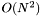

#include <stFastMapper.h>
Public Member Functions | |
| stFastMapper (EvaluatorType *eval, int dim=3, int dLoopCount=5) | |
| ~stFastMapper () | |
| void | Map (ObjectType *obj, double *map) |
| int | GetDimensions () |
| void | ChoosePivots (ObjectType **objs, int n, double *maps=NULL, int *pivotids=NULL) |
| int | GetPivotIdx (int axis, int name) |
| const ObjectType * | GetPivotObject (int idx) |
| void | GetPivotMap (int idx, double *map) |
| void | SetPivot (int idx, const ObjectType *obj, const double *map) |
| void | UpdatePivotMaps () |
| double | GetStress (int n, const ObjectType **objs, const double **maps) |
| bool | IsReady () |
In the creation of an instance, it is possible to determine the number of dimensions of the target Euclidean space and the number of interactions performed by the FindMostDistantObject() as described in the original FastMap article.
To initialize the pivot set, this implementation of FastMap provides 2 distinct ways. The first one is based on a selection from a set of candidate objects while the second allows users to set their own set of pivots without the need of the expensive pivot selection process.
The first approach requires a set of representative objects from dominion espace (all if possible) to be the possible candidates for pivots. They must be passed to the method ChoosePivots() that will choose the pivots from this set in order to initialize the mapper.
The second approach let the user to determine each pivot directly. In other words, it may be used to set the set of pivots when the selection process is note necessary because the best set of pivots is already known. It is done by methods SetPivot() and UpdatePivotMaps().
The most common use of this feature is to rebuild a previously created instance of stFastMapper using a saved set of pivots which were choosen im previous run by an execution of ChoosePivots().
An additional function of this class is the ability to calculate the stress generated by a given map. It is done by the method GetStress() which takes some informations acquired by the ChoosePivots() method.
This class template takes 2 parameters, one to determine the object type and other to determine the metric evaluator to be used. The object type is supposed to follow the stObject interface but, in fact, it only requires the Clone() method. The evaluator type follows the stMetricEvaluator interface.
The stFastMapper was originally designed to be used by MAMView Extraction Module.
Definition at line 319 of file stFastMapper.h.
|
||||||||||||||||||||
|
Creates a new fastmapper for a given number of dimensions. By default, the number of dimensions will be 3.
Definition at line 331 of file stFastMapper.h. |
|
|||||||||
|
Disposes this fastmapper. |
|
||||||||||||||||||||||||
|
Chooses the fastmap pivos in a set of candidates. The number of candidates must be at least (do not forget to put the value here). The parameter objs must point to a representative subset of the object set to allow the selection of a good set of pivots because it will determine the quality of the mapper. To avoid pointer problems, the objects in objs will never be modified or deleted. Both maps and pivotsids are optional returning values. They exist for enthusiastics who do not want to loose processing time by remapping these candidates. They will be ignored when NULL. maps must have at least n * GetDimension() positions and will contain a sequence of concatenated maps. pivotids must have at least 2 * GetDimension() positions.
|
|
|||||||||
|
This method returns the number of dimensions of this FastMapper. Definition at line 362 of file stFastMapper.h. |
|
||||||||||||||||
|
This method converts a given pivot identification to its correct pivot id.
Definition at line 401 of file stFastMapper.h. |
|
||||||||||||||||
|
Returns the map of the pivot identified by idx. To create the idx value from the pivot description, use GetPivotIdx(). The vector map must have at least GetDimension() positions.
Definition at line 430 of file stFastMapper.h. |
|
||||||||||
|
Returns the object of the pivot identified by idx. To create the idx value from the pivot description, use GetPivotIdx().
Definition at line 412 of file stFastMapper.h. |
|
||||||||||||||||||||
|
Calculates the stress of a given mapping. The input of this method uses the maps array returned by the function ChoosePivots(). Since it is an expensive method , avoid to call it unless it is really necessary.
|
|
|||||||||
|
Verifies if this FastMapper is ready to use. The test consists to verify if the last pivot is set.
Definition at line 497 of file stFastMapper.h. |
|
||||||||||||||||
|
This method will map an object using the current pivots. This method will claim the ownership of the given object.
|
|
||||||||||||||||||||
|
Determines the object and the map of the pivot identified by idx. This method is used to initializes this mapper with a given set of pivots. After all pivots are set, call UpdatePivotMaps() to update the pivot information. To create the idx value from the pivot description, use GetPivotIdx().
Definition at line 454 of file stFastMapper.h. |
|
|||||||||
|
This method rebuilds the maps for the pivots. All pivots must be set before call this method or undesirable effects may arise.
|